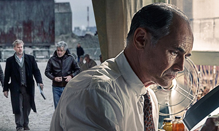
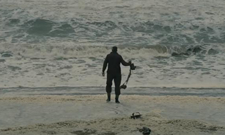
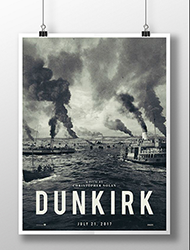
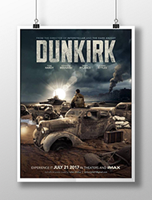

-
First Images from the Set of Christopher Nolan’s New Film
-

‘Dunkirk’: Mark Rylance Praises Christopher Nolan´s “Pure War Film”
Nolan is one of—if not the—biggest filmmakers working today. When you talk about directors who can walk into a studio, say “I want to make this,” and be handed an instant greenlight and an enormous budget, Nolan is at the very top of the list.
-

Christopher Nolan’s ‘Dunkirk’ Teaser Overwhelms Rival Trailers on Twitter
It clocks in at just 66 seconds, and much of that time is taken up by text, but the teaser for director Christopher Nolan‘s upcoming “Dunkirk” offers just enough of a taste of the World War II story’s epic scale to pique moviegoers’ interest.
- Featured Products
- 
On the Sea" Movie Poster
-

"Lone Man" Movie Poster
-

ORIGINAL Movie Poster